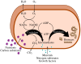

metabolism

Definition: Metabolism (, from Greek: μεταβολή metabolē, "change") is the set of life-sustaining chemical reactions in organisms. The three main functions of metabolism are: the conversion of the energy in food to energy available to run cellular processes; the conversion of food to building blocks of proteins, lipids, nucleic acids, and some carbohydrates; and the elimination of metabolic wastes. These enzyme-catalyzed reactions allow organisms to grow and reproduce, maintain their structures, and respond to their environments. The word metabolism can also refer to the sum of all chemical reactions that occur in living organisms, including digestion and the transportation of substances into and between different cells, in which case the above described set of reactions within the cells is called intermediary (or intermediate) metabolism.
Source: Wikipedia
Wikipedia Page (Something wrong with this association? Let us know.)
Wikidata Page (Something wrong with this association? Let us know.)